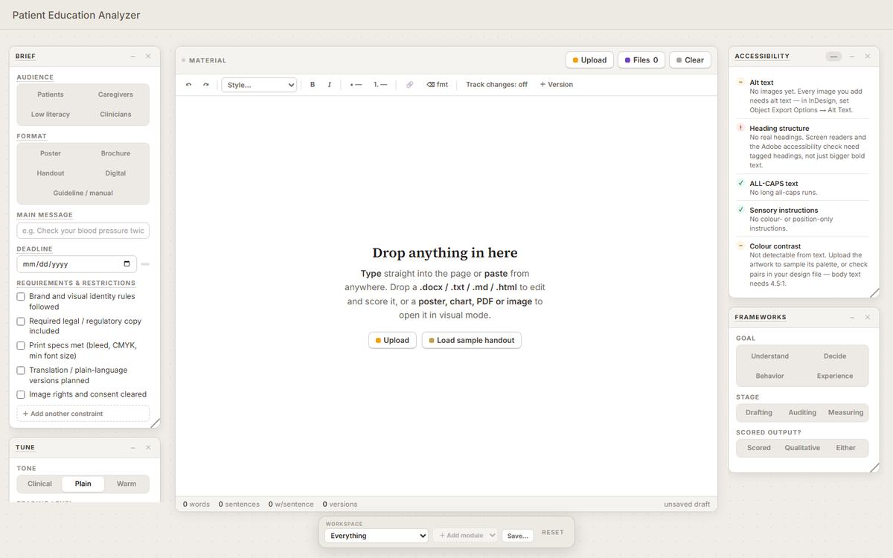
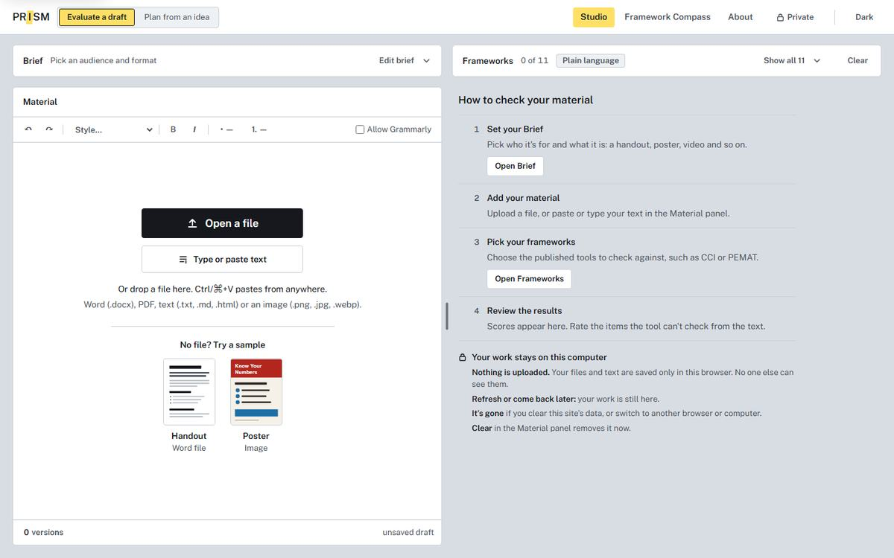
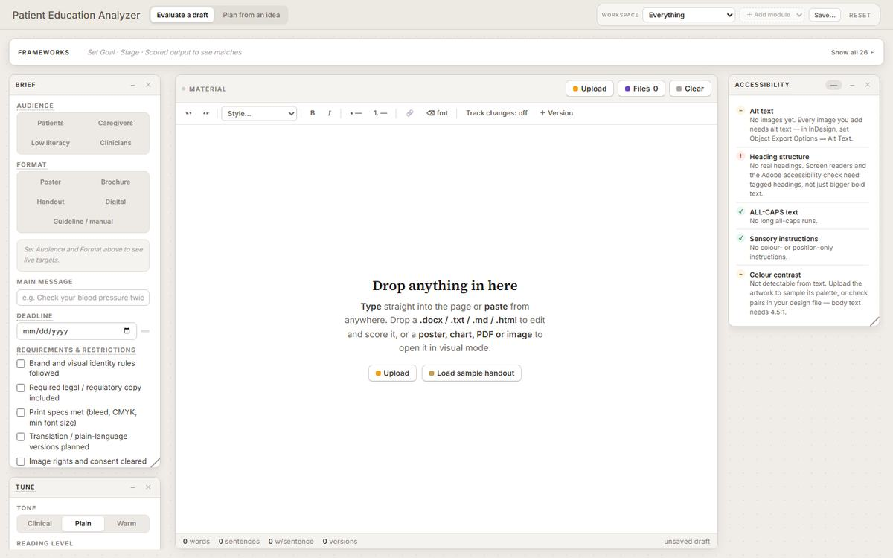

Sonia Seto
Biomedical communicator & UX designer
1T6 MScBMC · formerly patient education at UHN
Brought the patient education space, and the prototype that gave PRISM its two ways in.
Brought the patient education space, and the prototype that gave PRISM its two ways in.
Brought building with AI: the first tool, the studio, and the merges that made it one product.
Did my visual actually make a difference?
Patient handouts, illustrations and animations left my hands at handoff, and I never found out whether they helped anyone understand.
SoniaIt maps patient education materials across 10+ frameworks and explains why each one applies.
The first studio view, still called the Patient Education Analyzer, becomes PRISM on October 28.


Oct 28Aug 17Two LinkedIn posts, one chat, and two people who each knew half of what the project needed.
Sonia saw it and knew it was the missing piece in her work. Were there other frameworks, and a central hub of them?
Sonia saw GoInvo's post on its Human-assisted AI Design Certification for Healthcare and reached out to Chloe.
The first chat was about the certification. It turned into a project.
patient education (n.) Teaching patients about their own health and care.
One piece of patient content can be judged through about 26 frameworks, each a different lens, each in its own silo.
Five steps, run many times over. Each links to the moment where it happened.
Gathered and reviewed patient education frameworks.
Check the sources firstHTML mockups to explore ideas visually.
Six front doorsMatch real design tokens and components.
The proofing deskMerge into the source code via GitHub.
Sonia's forkDeploy on Vercel, with prototypes kept separate.
PRISM todayWe moved frameworks out of the sidebar into a collapsible bar above the workspace. The bar came from Sonia's prototype on September 15.

Before: sidebar · Aug 17After: top bar · Sep 15The real question: does this serve practitioners in the patient experience and education industry?
The code is on GitHub.
Drawing the Line · UofT Biomedical Communications · November 2026
The record behind the talk →